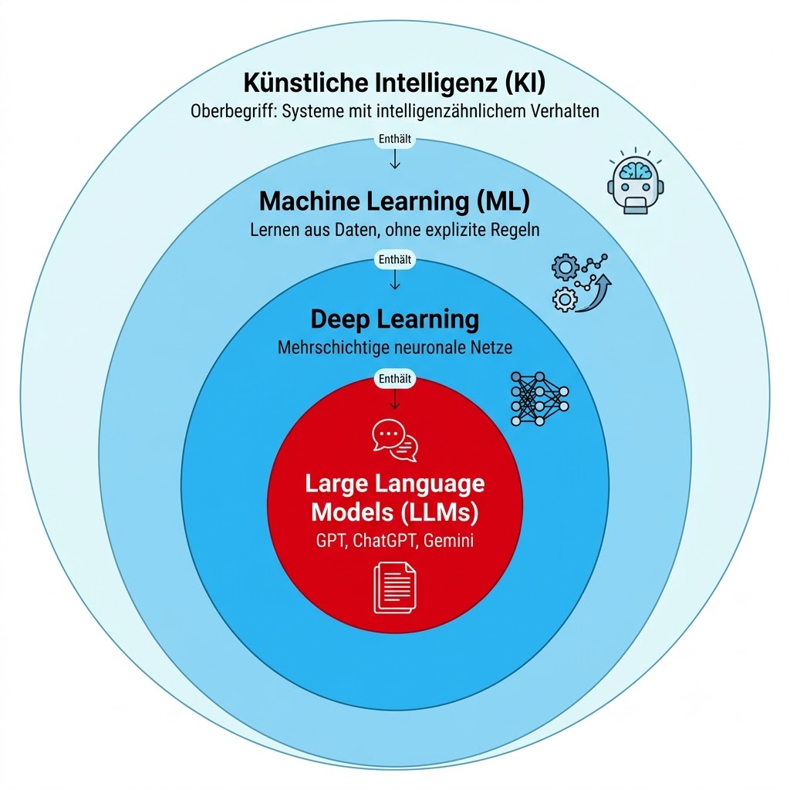

Vorlesung 11 · Informatik-Grundlagen · Maschinenbau
Wie funktioniert ChatGPT wirklich? Was steckt hinter Machine Learning und Large Language Models?
WS 2025/26 · DHBW Stuttgart
📌 Nach dieser Vorlesung kannst du …
Künstliche Intelligenz (KI) ist ein Oberbegriff für alle Verfahren, die einem Computer ermöglichen, Aufgaben auszuführen, für die man normalerweise menschliche Intelligenz benötigt – zum Beispiel Bilder erkennen, Sprache verstehen oder Texte verfassen.
Der entscheidende Unterschied zur klassischen Programmierung liegt im Ansatz: Bei klassischer Software schreiben Entwickler explizite Regeln – „wenn X, dann Y". Bei KI-Systemen werden diese Regeln nicht geschrieben, sondern aus Daten gelernt. Das System analysiert tausende oder millionen von Beispielen und leitet selbst Muster und Regeln daraus ab.
Klassische Programmierung
Ein Entwickler schreibt eine Regel: „Wenn die E-Mail das Wort ‚Gewonnen' im Betreff enthält UND der Absender unbekannt ist, dann verschiebe in Spam." Diese Regel gilt immer – auch wenn neue Spam-Varianten kommen, die andere Wörter nutzen.
KI / Machine Learning
Das System bekommt 100.000 E-Mails mit der Markierung „Spam" oder „Kein Spam" und lernt selbst, welche Muster auf Spam hinweisen. Es erkennt danach auch neue Spam-Varianten, ohne dass jemand eine neue Regel geschrieben hat.
Klassische Programmierung: Regeln + Daten → Antworten. | Machine Learning: Daten + Antworten → Regeln werden automatisch aus den Daten gelernt.
Die KI-Forschung entwickelt sich seit den 1950er Jahren in mehreren Wellen, wobei jede Phase auf dem Scheitern oder den Grenzen der vorherigen aufbaut.
Phase 1: Symbolische KI (1950er–1980er)
Die erste KI-Welle versuchte, menschliches Wissen als explizite Regeln in sogenannte Expertensysteme zu kodieren. Experten formulierten tausende Wenn-Dann-Regeln für ein bestimmtes Fachgebiet. Diese Systeme funktionierten in engen Domänen, scheiterten aber an der Komplexität der realen Welt – es ist schlicht unmöglich, alle Regeln manuell zu schreiben.
Phase 2: Klassisches Machine Learning (1990er–2010er)
Statt Regeln zu schreiben, ließ man Algorithmen aus Daten lernen. Verfahren wie Entscheidungsbäume und Support Vector Machines konnten Muster in strukturierten Daten erkennen. Spam-Filter und erste Produktempfehlungen entstanden in dieser Phase. Die Grenzen lagen bei unstrukturierten Daten wie Bildern oder natürlicher Sprache.
Phase 3: Deep Learning (ab ca. 2012)
Deep Learning nutzt mehrstufige neuronale Netze, die durch riesige Datenmengen und leistungsstarke GPUs trainiert werden. Seit 2012 dominierten Deep-Learning-Systeme Bilderkennungswettbewerbe und übertrafen Menschen in vielen Aufgaben. ChatGPT, Gesichtserkennung am Handy und Sprachassistenten sind Produkte dieser dritten Welle.
Machine Learning (ML) ist ein Teilgebiet der KI, in dem Systeme automatisch aus Daten lernen, ohne für jeden Fall explizit programmiert zu werden. Das Grundprinzip lässt sich auf eine einfache Formel bringen: Daten + Algorithmus → Modell.
Trainingsdaten
Ein ML-System lernt aus einer großen Menge von Beispielen, den sogenannten Trainingsdaten. Für einen Spam-Filter sind das E-Mails mit der Markierung „Spam" oder „Kein Spam". Je mehr und je bessere Daten vorhanden sind, desto leistungsfähiger wird das gelernte Modell.
Algorithmus und Training
Der Algorithmus analysiert die Trainingsdaten und sucht nach statistischen Mustern. Beim sogenannten Training werden interne Parameter so angepasst, dass der Algorithmus für bekannte Beispiele korrekte Vorhersagen macht.
Modell und Vorhersage
Das Ergebnis des Trainings ist ein Modell – eine komprimierte mathematische Darstellung der gelernten Muster. Dieses Modell kann auf neue, unbekannte Daten angewendet werden, um Vorhersagen zu treffen.
Spotify analysiert, welche Songs du hörst, überspringst, auf Repeat stellst oder zu Playlists hinzufügst. Zusammen mit dem Hörverhalten von Millionen ähnlicher Nutzer entsteht ein Modell, das vorhersagt, welcher Song dir als nächstes gefallen wird. Niemand hat Spotify gesagt „dieser Nutzer mag Indie-Rock aus den 2000ern" – das System hat es selbst gelernt.
Deep Learning ist ein spezieller Ansatz innerhalb des Machine Learning, der von der Struktur des menschlichen Gehirns inspiriert ist. Statt eines einzigen Algorithmus werden viele künstliche Neuronen in mehreren Schichten hintereinandergeschaltet – daher der Name „tief" (englisch deep).
Ein künstliches Neuron ist – vereinfacht gesprochen – eine Recheneinheit, die Eingaben empfängt, sie gewichtet zusammenrechnet und entscheidet, ob es ein Signal weitergibt. Die Schichten heißen Eingabeschicht, versteckte Schichten und Ausgabeschicht. Jede Schicht erkennt komplexere Muster als die vorherige: Bei der Bilderkennung etwa erkennt die erste Schicht Kanten, die zweite Formen, die dritte Gesichtsteile, die vierte vollständige Gesichter.
Intuition: Gesichtserkennung am Handy
Zeigt man einem Deep-Learning-Netz millionen von beschrifteten Gesichtsfotos, lernt es selbst, welche Pixel-Muster welchem Gesicht entsprechen. Niemand musste Regeln wie „runde Augen + Nase mittig = Gesicht" explizit eingeben. Das Netz extrahiert diese Merkmale automatisch.
Warum es so mächtig ist
Deep Learning braucht keine manuell formulierten Merkmale. Es extrahiert relevante Strukturen automatisch aus rohen Daten – aus Pixeln, aus Schallwellen, aus Text. Das macht es universell einsetzbar für Bilder, Audio und Sprache gleichermaßen.
KI ist der Überbegriff. Machine Learning ist ein Teilgebiet der KI. Deep Learning ist ein spezieller Ansatz innerhalb von ML. Und GPT-Modelle sind Deep-Learning-Systeme mit einer besonderen Architektur. Stellt man diese Begriffe als ineinander verschachtelte Kreise dar, sitzt GPT im innersten.

GPT steht für Generative Pre-trained Transformer. Ein Transformer ist eine bestimmte Deep-Learning-Architektur, die 2017 von Google vorgestellt wurde und seitdem nahezu alle modernen Sprachmodelle antreibt – von ChatGPT über Copilot bis Gemini.
Das Grundprinzip eines Large Language Model (LLM) ist verblüffend einfach: Ein LLM ist eine Maschine, die immer das wahrscheinlichste nächste Wort vorhersagt. Trainiert auf Milliarden von Texten aus dem Internet, aus Büchern und Artikeln, hat das Modell gelernt, welche Wörter in welchen Zusammenhängen aufeinanderfolgen. Wenn du ChatGPT fragst „Was ist die Hauptstadt von Deutschland?", antwortet das Modell nicht, weil es „weiß" dass Berlin die Hauptstadt ist – sondern weil nach dieser Frage in den Trainingsdaten sehr häufig das Wort „Berlin" folgte.
Kontextverständnis durch Attention
Der Kern der Transformer-Architektur ist der sogenannte Attention-Mechanismus. Er ermöglicht dem Modell, beim Vorhersagen eines Wortes den gesamten bisherigen Kontext zu berücksichtigen – nicht nur das direkt vorherige Wort. Das macht die Texte kohärent und thematisch konsistent, auch über viele Sätze hinweg.
Pre-training und Fine-tuning
GPT-Modelle werden in zwei Phasen trainiert. Im Pre-training lernt das Modell aus riesigen Textmengen, Wörter vorherzusagen. Beim nachgelagerten Fine-tuning wird das Modell gezielt angepasst, um hilfreiche Antworten statt zufälliger Textfortsetzungen zu liefern.
Ein LLM „weiß" nichts und „versteht" nichts im menschlichen Sinne. Es ist eine hochspezialisierte statistische Maschine, die auf der Basis von Milliarden Wort-Nachfolge-Wahrscheinlichkeiten den Text vervollständigt, der am wahrscheinlichsten auf deine Eingabe folgt.
KI-Systeme sind längst Teil des täglichen Lebens – oft ohne dass man es bemerkt. Die folgende Übersicht ordnet bekannte Anwendungen den richtigen KI-Teilgebieten zu.
| Anwendung | KI-Verfahren | Was passiert im Hintergrund? |
|---|---|---|
| ChatGPT, Copilot, Gemini | Large Language Model (LLM) | Wort-für-Wort-Vorhersage auf Basis von Milliarden Trainingstexten |
| Spotify-Empfehlungen | Klassisches ML (Collaborative Filtering) | Ähnliche Nutzerprofile werden abgeglichen, Präferenzen übertragen |
| Netflix-Empfehlungen | ML + Deep Learning | Sehdauer, Abbruchpunkte und Wiederholungen fließen ins Modell ein |
| Handy-Gesichtserkennung | Deep Learning (CNN) | Gesichtsmerkmale werden durch neuronale Schichten erkannt und verglichen |
| Spam-Filter | Klassisches ML | Textmuster und Metadaten des Absenders entscheiden über die Einordnung |
| Google Translate | Transformer / LLM | Übersetzung als statistisches Problem: wahrscheinlichste Entsprechung suchen |
Wer KI-Systeme sinnvoll einsetzen möchte, muss ihre Grenzen kennen. Zwei Probleme sind dabei besonders wichtig: Halluzinationen und Bias.
Halluzinationen
Ein LLM erzeugt immer den wahrscheinlichsten nächsten Text – auch wenn die zugrundeliegende Information falsch oder schlicht erfunden ist. Das Modell „erfindet" Fakten, die plausibel klingen, aber nicht existieren. ChatGPT hat bereits Bücher, Gerichtsurteile und wissenschaftliche Artikel erfunden – vollständig mit Titel, Autor und Jahreszahl.
Das Modell bemerkt nicht, wenn es etwas nicht weiß, weil es kein echtes Wissen besitzt – es kennt nur statistische Muster über Wort-Nachfolgen.
Bias – Verzerrungen aus den Daten
Bias (Verzerrung) entsteht, wenn die Trainingsdaten selbst Vorurteile oder Ungleichgewichte enthalten. Ein Modell, das auf historischen Stellenanzeigen trainiert wird, in denen Frauen in bestimmten Berufen seltener vorkommen, lernt diese Verzerrung mit – und gibt entsprechend verzerrte Empfehlungen weiter, rein statistisch, ohne böse Absicht.
Behandle LLM-Ausgaben wie Aussagen eines gut informierten, aber unzuverlässigen Bekannten: interessant und oft hilfreich, aber niemals ohne Überprüfung zu übernehmen – insbesondere bei Fakten, Zahlen und Quellenangaben. LLMs sind keine Suchmaschinen und keine verifizierten Datenbanken.
KI ist der Überbegriff für Systeme mit intelligenzähnlichem Verhalten. Machine Learning lässt Systeme aus Daten lernen, statt Regeln manuell zu schreiben. Deep Learning tut das mit mehrschichtigen neuronalen Netzen. LLMs sind Deep-Learning-Systeme, die Text Wort für Wort vorhersagen – und damit täuschend kompetent wirken, ohne wirklich zu „verstehen". Wer das weiß, kann KI-Werkzeuge sinnvoll und kritisch einsetzen.
| Begriff | Einordnung | Kernaussage |
|---|---|---|
| Künstliche Intelligenz | Überbegriff | Systeme, die Aufgaben erledigen, die normalerweise Intelligenz erfordern |
| Machine Learning | Teilgebiet der KI | Daten + Algorithmus → Modell lernt selbst Regeln |
| Deep Learning | Spezialfall von ML | Mehrstufige neuronale Netze; mächtig für Bild, Audio und Text |
| LLM / GPT | Deep-Learning-Modell | Wort-Vorhersagemaschine, trainiert auf Milliarden Texten |
| Halluzination | LLM-Schwäche | Plausibel klingende, aber falsche oder erfundene Ausgaben |
| Bias | ML-Schwäche | Verzerrungen in Trainingsdaten führen zu verzerrten Ergebnissen |